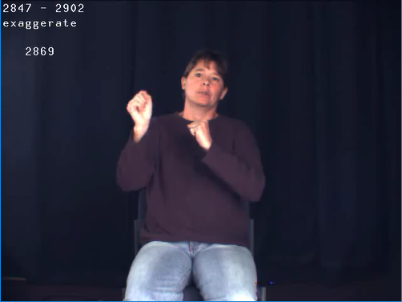
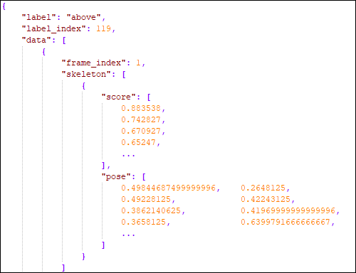
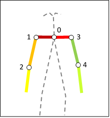
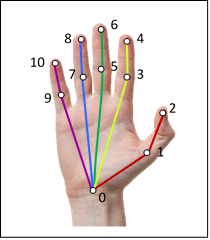

ASLLVD-Skeleton
ASLLVD-Skeleton is a skeleton estimation dataset for sign language that is based on the American Sign Language Lexicon Video Dataset (ASLLVD).
An updated version of the ASLLVD dataset (with corrections and revisions) – along with other linguistically annotated citation-form video data – is available for direct download from https://dai.cs.rutgers.edu/dai/s/signbank.
It was created using the OpenPose library and by following the steps described below. The output of each of the main steps is available below for use in future works.

Further details on the creation of this dataset can be found in the paper Spatial-Temporal Graph Convolutional Networks for Sign Language Recognition. The source code can be downloaded by clicking here.
If you have any questions, please feel free to contact me at cca5@cin.ufpe.br.
1. Acquire samples
The first step consists in obtaining the videos that make up the ASLLVD, in order to reconstitute the dataset and make feasible the later stages. A metadata file contained in it was used to guide this process. At this moment, only the videos captured by the frontal camera were considered, once they simultaneously contemplates movements of the trunk, hands and face of individuals.
2. Segment samples
Since each file in ASLLVD corresponds to a section where multiple signs were recorded per individual, in this step they were segmented to generate a file for each sign with their respective labels. The output of this step consists of small videos with a few seconds and looking similar to the one shown in figure below.
Extremely important: The ASLLVD video data are subject to Terms of Use: http://www.bu.edu/asllrp/signbank-terms.pdf.
By downloading these video files, you are agreeing to respect these conditions. In particular, NO FURTHER REDISTRIBUTION OF THESE VIDEO FILES is allowed.
Click here to download the output of this step.

3. Estimate skeletons
At this stage the skeletons of the individuals present in the segmented videos were estimated and a total of 130 keypoints of the body, hands and face were extracted by OpenPose. For more details on these keypoints, please refer to this link. The output of this process consists of a JSON file containing the estimated coordinates and the degree of confidence of that estimate for each point. This information is described within two sections: "score" and "pose". The figure below illustrates an example of this JSON.
Click here to download the output of this step.

4. Filter keypoints
In this step, the 27 keypoints shown in the figure below are filtered from the keypoints estimated by OpenPose. They refer to the shoulders, arms and hands. The output of this step is similar to the one obtained in the previous one, but with fewer coordinates.
Click here to download the output of this step.
 
5. Split dataset
At this point, the dataset with filtered points is divided into smaller subsets for training and testing. The output of this step consists of two directories containing the JSON samples defined for each subset, respectively. The following ratio was used:
- 80% for training;
- 20% for testing;
Click here to download the output of this step.
6. Normalize and serialize
Finally, the last step is to normalize and serialize the samples to make them compatible with the reading format used in the paper presented above. Standardization aims to make the length of all samples uniform by applying the repetition of their frames sequentially to the complete completion of a set fixed number of frames. The number of fixed frames adopted here is 63 (which, at a rate of 30 FPS, corresponds to a video with an approximate duration of 2 seconds). Serialization, in turn, consists of preloading the normalized samples of the subsets created above to convert them into physical Python files, which contain their representations in memory. For each of the subsets divided in the previous step, two physical files are generated: one containing the samples and another containing the labels for those samples.
Click here to download the output of this step.
If you encounter any problems downloading the above files, click here to explore the files directory.